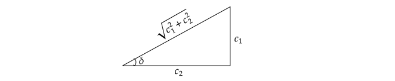

Equations with constant coefficients.
Linear differential equations with constant coefficients, that is equations of the form:
$$\begin{aligned} a_{n}y^{(n)}+a_{n-1}y^{(n-1)}+\ldots+a_{0}y & =h(x)\quad\tag{1} \end{aligned}$$
in which $a_{0},a_{1},\ldots,a_{n}\neq0$ are real constants, are in many respects the simplest of all differential equations. For one thing, they can be discussed entirely within the context of linear algebra and form the only substantial class of equations with order greater than one that can be explicitly solved. This, plus the fact, that such equations arise in a surprisingly wide variety of physical problems, accounts for a special place they occupy in the theory of linear differential equations.
We shall begin the discussion in this chapter, by considering the homogenous version of equation (1), which can be written in the form:
$$\begin{aligned} (D^{n}+a_{n-1}D^{n-1}+\ldots+a_{0})y & =0\quad\tag{2} \end{aligned}$$
or as
$$\begin{aligned} Ly & =0\quad\tag{3} \end{aligned}$$
where $L$ is constant coefficient linear differential operator $D^{n}+a_{n-1}D^{n-1}+\ldots+a_{0}$. Algebraically, such operators behave exactly as if they were ordinary polynomials in $D$, and therefore can be factored according to the rules of elementary algebra. In particular, it follows that every linear differential operator with constant coefficients can be expressed as a product of constant coefficient operators of degrees one and two. That’s because, by the fundamental theorem of algebra, every polynomial of degree $n$ has atleast one complex root. As we shall see, this essentially reduces the task of solving (2) to the second-order case, where complete results can be obtained with relative ease.
This done, we will take up the problem of finding a particular solution of $Ly=h$, given the general solution of the associated homogenous equation $Ly=0$. Here the restriction on the coefficients of $L$ will be dropped and much more far reaching results are obtained. The language of operator theory and the ideas of linear algebra will dominate this portion of our discussion and furnish just that measure of insight needed to make it intelligible.
Homogenous equations of order two.
We have already emphasized that the technique for solving constant coefficient linear differential equations depends on the commutativity of the operator multiplication involved. To make this dependence explicit, and at the same time phrase it in the form best suited to our immediate needs, we begin by establishing :
::: lem* ** 1**. If $L_{1},\ldots,L_{n}$ are constant coefficient linear differential operators, then the null space of each of them is contained in the null space of their product. :::
Proof.
To prove this assertion we must show that $(L_{1}L_{2}\ldots L_{n})y=0$ whenever $L_{i}y=0$. But this is a triviality, since:
$$\begin{aligned} (L_{1}L_{2}\ldots L_{n})y & =L_{1}L_{2}\ldots L_{i-1}L_{i+1}\ldots L_{n}L_{i}y\\ & =L_{1}L_{2}\ldots L_{i-1}L_{i+1}\ldots L_{n}(L_{i}y)\\ & =L_{1}L_{2}\ldots L_{i-1}L_{i+1}\ldots L_{n}(0)\\ & =0 \end{aligned}$$
::: example* ** 1**. The second order equation
$$\begin{aligned} (D^{2}-4)y & =0\quad\tag{4} \end{aligned}$$
may be rewritten as:
$$\begin{aligned} (D+2)(D-2)y & =0 \end{aligned}$$
Hence, $e^{2x}$ and $e^{-2x}$ are the solutions of (4), since they are respectively the solutions of the first order equations $(D-2)y=0$ and $(D+2)y=0$. Furthermore, these functions are linearly independent in $\mathcal{C}(-\infty,\infty)$ and therefore it follows that the general solution of (4) is :
$$\begin{aligned} y & =c_{1}e^{2x}+c_{2}e^{-2x} \end{aligned}$$ :::
This example suggests that we attempt to solve the general second-order equation
$$\begin{aligned} (D^{2}+a_{1}D+a_{0})y & =0\quad\tag{5} \end{aligned}$$
by decomposing the operator $D^{2}+a_{1}D+a_{0}$ into linear factors. To this end, we find the roots $\alpha_{1},\alpha_{2}$ of the quadratic equation:
$$\begin{aligned} m^{2}+a_{1}m+a_{0} & =0\quad\tag{6} \end{aligned}$$
known as the auxiliary or characteristic equation of (5) and then rewrite (5) as:
$$\begin{aligned} (D-\alpha_{1})(D-\alpha_{2})y & =0\quad\tag{7} \end{aligned}$$
In solving the characteristic equation, the following three possibilities may occur.
1. All its roots are distinct and real.
2. All its roots are real but some of its roots repeat.
3.All its roots are imaginary.
We shall discuss each of the above three possibilities separately.
Case I. Roots of the Characteristic Equation real and distinct.
Here the reasoning used in the above example carries over without change. The functions $e^{\alpha_{1}x}$ and $e^{\alpha_{2}x}$ are linearly independent solutions of (7), and hence the general solution of the equation is:
$$\begin{aligned} y & =c_{1}e^{\alpha_{1}x}+c_{2}e^{\alpha_{2}x}\quad\tag{8} \end{aligned}$$
Case II. Roots of the Characteristic equation are real and equal.
In this case, the equation (7) becomes:
$$\begin{aligned} (D-\alpha)^{2}y & =0\quad\tag{9} \end{aligned}$$
Our earlier argument yields but one solution of the equation namely, $e^{\alpha x}$. Using it, however, we can apply the following method to find a second linearly independent solution. We know that, if $y_{1}(x)$ and $y_{2}(x)$ are the solutions of the ODE:
$$\begin{aligned} y’’+a_{1}y’+a_{0}y & =0\quad\tag{10} \end{aligned}$$
then the Wronskian $W[y_{1}(x),y_{2}(x)]$ satisfies the first-order equation:
$$\begin{aligned} \frac{dy}{dx}+\frac{a_{1}}{a_{2}}y & =0\quad\tag{11} \end{aligned}$$
That, is
$$\begin{aligned} W[y_{1}(x),y_{2}(x)] & =ce^{-\int(a_{1}/a_{2})dx}\\ & =ce^{-(a_{1}/a_{2})x}\quad\tag{12} \end{aligned}$$
But, the Wronskian $W[y_{1}(x),y_{2}(x)]$ is given by :
$$\begin{aligned} W[y_{1}(x),y_{2}(x)] & =y_{1}(x)y_{2}’(x)-y_{2}(x)y_{1}’(x)\\ & =y_{1}y_{2}’-y_{2}y_{1}’\\ & =y_{1}(x)\frac{dy_{2}}{dx}-y_{1}’(x)y_{2}\quad\tag{13} \end{aligned}$$ Putting together (12) and (13), we have the first-order equation:
$$\begin{aligned} y_{1}(x)\frac{dy_{2}}{dx}-y_{1}’(x)y_{2} & =ce^{-(a_{1}/a_{2})x}\quad\tag{14} \end{aligned}$$
Dividing both sides by $y_{1}(x)^{2}$, we get:
$$\begin{aligned} \frac{y_{1}(x)\frac{dy_{2}}{dx}-y_{1}’(x)y_{2}}{y_{1}(x)^{2}} & =c\frac{e^{-(a_{1}/a_{2})x}}{y_{1}(x)^{2}}\quad\tag{15} \end{aligned}$$
The left-hand side is now an exact differential and we have:
$$\begin{aligned} d\left[\frac{y_{2}(x)}{y_{1}(x)}\right] & =c_{2}\frac{e^{-(a_{1}/a_{2})x}}{y_{1}(x)^{2}}dx\\ \int d\left[\frac{y_{2}(x)}{y_{1}(x)}\right] & =c_{2}\int\frac{e^{-(a_{1}/a_{2})x}}{y_{1}(x)^{2}}dx+c_{1}\\ y_{2}(x) & =c_{2}y_{1}(x)\int\frac{e^{-(a_{1}/a_{2})x}}{y_{1}(x)^{2}}dx+c_{1}y_{1}(x)\quad\tag{16} \end{aligned}$$
Since the roots are repeated, the equation (9) can be expressed as:
$$\begin{aligned} (D^{2}-2\alpha D+\alpha^{2})y & =0\quad\tag{17} \end{aligned}$$
Hence, $a_{2}=1$, $a_{1}=2\alpha$. We also know that, $y_{1}(x)=e^{\alpha x}$. Hence, the general solution to the equation is:
$$\begin{aligned} y_{2}(x) & =c_{2}e^{\alpha x}\int\frac{e^{2\alpha x}}{e^{2\alpha x}}dx+c_{1}e^{\alpha x}\\ & =e^{\alpha x}(c_{1}+c_{2}x)\quad\tag{18} \end{aligned}$$
The second linearly independent solution is $xe^{\alpha x}$. We have already seen that the two functions $e^{x}$, $xe^{x}$ are linearly independent.
In general, it can be shown that if the characteristic equation has a root $m=\alpha$, which has a multiplicity of $n$, then the general solution is:
$$\begin{aligned} y & =(c_{1}+c_{2}x+c_{3}x^{2}+\ldots+c_{n}x^{n-1})e^{\alpha x}\quad\tag{19} \end{aligned}$$
Case III. $\alpha_{1}$ and $\alpha_{2}$ are complex. Any imaginary roots must occur in conjugate pairs. Hence, if $\alpha+i\beta$ is one root, then the other root must be $\alpha-i\beta.$ Assume now that $\alpha+i\beta$ and $\alpha-i\beta$ are two imaginary roots of the characteristic equation of a second order linear differential equation. Then, its general solution by (8) is given as:
$$\begin{aligned} y & =c_{1}’e^{(\alpha+i\beta)x}+c_{2}’e^{(\alpha-i\beta)x}\\ & =e^{\alpha x}(c_{1}’e^{i\beta x}+c_{2}’e^{-i\beta x})\quad\tag{20} \end{aligned}$$
By Euler’s formula, we know that $e^{i\beta x}=\cos\beta x+i\sin\beta x$, and $e^{-i\beta x}=\cos\beta x-i\sin\beta x$. Substituting these in (20), we get:
$$\begin{aligned} y & =e^{\alpha x}[(c_{1}’+c_{2}’)\cos\beta x+(c_{1}’-c_{2}’)i\sin\beta x]\quad\tag{21} \end{aligned}$$
We may now replace the constants $c_{1}’+c_{2}’=c_{1}$ and $i(c_{1}’-c_{2}’)=c_{2}$. Then, (21) becomes:
$$\begin{aligned} y & =e^{\alpha x}(c_{1}\cos\beta x+c_{2}\sin\beta x)\quad\tag{22} \end{aligned}$$
Another form of writing the general solution (22) more useful for practical purposes may be obtained as follows. Write the equality:
$$\begin{aligned} c_{1}\cos\beta x+c_{2}\sin\beta x & =\sqrt{c_{1}^{2}+c_{2}^{2}}\left(\frac{c_{1}}{\sqrt{c_{1}^{2}+c_{2}^{2}}}\cos\beta x+\frac{c_{2}}{\sqrt{c_{1}^{2}+c_{2}^{2}}}\sin\beta x\right)\quad\tag{23} \end{aligned}$$

From the above figure, we see that
$$\begin{aligned} \sin\delta & =\frac{c_{1}}{\sqrt{c_{1}^{2}+c_{2}^{2}}},\quad\cos\delta=\frac{c_{2}}{\sqrt{c_{1}^{2}+c_{2}^{2}}}\quad\tag{24} \end{aligned}$$
The susbstitution of these values in the right hand side of (23) gives:
$$\begin{aligned} c_{1}\cos\beta x+c_{2}\sin\beta x & =\sqrt{c_{1}^{2}+c_{2}^{2}}(\sin\delta\cos\beta x+\sin\beta x\cos\delta)\\ & =\sqrt{c_{1}^{2}+c_{2}^{2}}\sin(\beta x+\delta)\quad\tag{25} \end{aligned}$$
If we interchange the positions of $c_{1}$ and $c_{2}$, we can also write:
$$\begin{aligned} c_{1}\cos\beta x+c_{2}\sin\beta x & =\sqrt{c_{1}^{2}+c_{2}^{2}}(\cos\delta\cos\beta x+\sin\beta x\sin\delta)\\ & =\sqrt{c_{1}^{2}+c_{2}^{2}}\cos(\beta x-\delta)\quad\tag{26} \end{aligned}$$
Replacing in (23) a new constant $c$ for the constant $\sqrt{c_{1}^{2}+c_{2}^{2}}$, we may write the general solution (23) in either of the forms:
$$\begin{aligned} y & =ce^{\alpha x}\sin(\beta x+\delta)\quad\tag{27} \end{aligned}$$
$$\begin{aligned} y & =ce^{\alpha x}\cos(\beta x-\delta)\quad\tag{28} \end{aligned}$$
::: example* ** 2**. Find the general solution of
$$\begin{aligned} y’’-2y’+2y & =0\quad\tag{29} \end{aligned}$$ :::
Solution.
The roots of the characteristic equation of (29) are given by:
$$\begin{aligned} D^{2}-2D+2 & =0\\ (D-1)^{2}+1 & =0\\ (D-1+i)(D-1-i) & =0 \end{aligned}$$
So, $\alpha_{1}=1-i$ and $\alpha_{2}=1+i$. Therefore, the general solution of (29) can be written in any of the forms:
$$\begin{aligned} y & =e^{x}(c_{1}\cos x+c_{2}\sin x)\\ & =c_{1}e^{(1+i)x}+c_{2}e^{(1-i)x}\\ & =ce^{x}\sin(x+\delta)\\ & =ce^{x}\cos(x-\delta) \end{aligned}$$
If the linear differential equation
$$\begin{aligned} a_{4}y^{(4)}+a_{3}y’’’+a_{2}y’’+a_{1}y’+a_{0} & =0,\quad a_{4}\neq0 \end{aligned}$$ has a conjugate pair of repeated imaginary roots, i.e. if $\alpha+i\beta$ and $\alpha-i\beta$ each occurs twice as a root, then by case II, the general solution is:
$$\begin{aligned} y & =(c_{1}+c_{2}x)e^{(\alpha+i\beta)x}+(c_{3}+c_{4}x)e^{(\alpha-i\beta)x}\quad\tag{30} \end{aligned}$$
The equivalent forms are:
$$\begin{aligned} y & =e^{\alpha x}[(c_{1}+c_{2}x)e^{i\beta x}+(c_{3}+c_{4}x)e^{-i\beta x}]\\ & =e^{\alpha x}[(c_{1}+c_{2}x)\cos\beta x+(c_{3}+c_{4}x)\sin\beta x]\\ & =e^{\alpha x}(c_{1}\sin(\beta x+\delta_{1})+c_{2}x\sin(\beta x+\delta_{2}))\\ & =e^{\alpha x}(c_{1}\cos(\beta x-\delta_{1})+c_{2}x\cos(\beta x-\delta_{2})) \end{aligned}$$
::: example* ** 3**. Find the general solution of:
$$\begin{aligned} y^{(4)}+2y’’+1 & =0 \end{aligned}$$ :::
Solution.
The roots of the characteristic equation are:
$$\begin{aligned} D^{4}+2D^{2}+1 & =0\\ (D^{2}+1)^{2} & =0 \end{aligned}$$
This equation has the complex conjugates $i$ and $-i$ as roots, with multiplicity $2$. Hence, the general solution of the differential equation is:
$$\begin{aligned} y & =(c_{1}+c_{2}x)\cos x+(c_{3}+c_{4}x)\sin x \end{aligned}$$
Find the general solutions of each of the following equations.
Exercise. ** 1**. $y’’+y’-2y=0$. :::
Solution.
The characteristic equation is:
$$\begin{aligned} m^{2}+m-2 & =0\\ m^{2}+2m-m-2 & =0\\ m(m+2)-1(m+2) & =0\\ (m-1)(m+2) & =0 \end{aligned}$$
The roots of this equation are $\alpha_{1}=1$ and $\alpha_{2}=-2$. Hence, the general solution of the differential equation is:
$$\begin{aligned} y & =c_{1}e^{x}+c_{2}e^{-2x} \end{aligned}$$
Exercise. ** 2**. $3y’’-5y’+2y=0$. :::
Solution.
The characteristic equation is:
$$\begin{aligned} 3m^{2}-5m+2 & =0\\ 3m^{2}-3m-2m+2 & =0\\ 3m(m-1)-2(m-1) & =0\\ (3m-2)(m-1) & =0 \end{aligned}$$
The roots of this equation are $\alpha_{1}=\frac{2}{3}$, $\alpha_{2}=1$. Hence, the general solution of the differential equation is given by:
$$\begin{aligned} y & =c_{1}e^{\frac{2x}{3}}+c_{2}e^{x} \end{aligned}$$
Exercise. ** 3**. $8y’’+14y’-15y=0$. :::
Solution.
The characteristic equation is:
$$\begin{aligned} 8m^{2}+14m-15 & =0\\ 8m^{2}+20m-6m-15 & =0\\ 4m(2m+5)-3(2m+5) & =0\\ (4m-3)(2m+5) & =0 \end{aligned}$$
The roots of this equation are $\alpha_{1}=\frac{3}{4}$, $\alpha_{2}=-\frac{2}{5}$. Hence, the general solution of the differential equation is given by:
$$\begin{aligned} y & =c_{1}e^{\frac{3x}{4}}+c_{2}e^{-\frac{2x}{5}} \end{aligned}$$
Exercise. ** 4**. $y’’-2y’=0$. :::
Solution.
The characteristic equation is:
$$\begin{aligned} m^{2}-2m & =0\\ m(m-2) & =0 \end{aligned}$$
The roots of this equation are $\alpha_{1}=0$ and $\alpha_{2}=2$. Hence, the general solution of the differential equation is given by:
$$\begin{aligned} y & =c_{1}+c_{2}e^{2x} \end{aligned}$$
Exercise. ** 5**. $y’’+4y=0$. :::
Solution.
The characteristic equation is:
$$\begin{aligned} m^{2}+4 & =0 \end{aligned}$$
The roots of this equation are the complex conjugates $z_{1}=2i$ and $z_{2}=-2i$. Hence, the general solution of the differential equation is:
$$\begin{aligned} y & =c_{1}\cos2x+c_{2}\sin2x \end{aligned}$$
Exercise. ** 6**. $3y’’+2y=0$. :::
Solution.
The characteristic equation is:
$$\begin{aligned} 3m^{2}+2 & =0\\ m^{2}+\frac{2}{3} & =0 \end{aligned}$$
The roots of this equation are the complex conjugates $z_{1}=\frac{2}{3}i$ and $z_{2}=-\frac{2}{3}i$. Hence, the general solution of the differential equation is:
$$\begin{aligned} y & =c_{1}\cos\frac{2}{3}x+c_{2}\sin\frac{2}{3}x \end{aligned}$$
Exercise. ** 7**. $y’’+4y’+8y=0$. :::
Solution.
The characteristic equation is:
$$\begin{aligned} m^{2}+4m+8 & =0\\ (m+2)^{2}+4 & =0 \end{aligned}$$
The roots of this equation are the complex conjugates $\alpha\pm i\beta=-2\pm2i$. Hence, the general solution of the differential equation is:
$$\begin{aligned} y & =e^{-2x}(c_{1}\cos2x+c_{2}\sin2x) \end{aligned}$$
Exercise. ** 8**. $4y’’-4y’+3y=0$. :::
Solution.
The characteristic equation is:
$$\begin{aligned} 4m^{2}-4m+3 & =0\\ (2m-1)^{2}+2 & =0\\ (2m-1)^{2}-(\sqrt{2}i)^{2} & =0\\ (2m-1+\sqrt{2}i)(2m-1-\sqrt{2}i) & =0 \end{aligned}$$
The roots of this equation are the complex conjugates $\alpha\pm\beta i=1\pm\sqrt{2}i$. Hence, the general solution of the differential equation is:
$$\begin{aligned} y & =e^{x}(c_{1}\cos\sqrt{2}x+c_{2}\sin\sqrt{2}x) \end{aligned}$$
Exercise. ** 9**. $y’’-2y’+2y=0$. :::
Solution.
The characteristic equation is:
$$\begin{aligned} m^{2}-2m+2 & =0\\ (m-1)^{2}+1 & =0\\ (m-1)^{2}-(i)^{2} & =0\\ (m-1+i)(m-1-i) & =0 \end{aligned}$$
The roots of this equation are the complex conjugates $\alpha\pm\beta i=1\pm i$. Hence, the general solution of the differential equation is:
$$\begin{aligned} y & =e^{x}(c_{1}\cos x+c_{2}\sin x) \end{aligned}$$
Exercise. ** 10**. $9y’’-12y+4y=0$. :::
Solution.
The characteristic equation is:
$$\begin{aligned} 9m^{2}-12m+4 & =0\\ (3m-2)^{2} & =0 \end{aligned}$$
The roots of this equation are $\alpha=\frac{2}{3}$ with multiplicity $2$. Hence, the general solution of the differential equation is:
$$\begin{aligned} y & =(c_{1}+c_{2}x)e^{\frac{2x}{3}} \end{aligned}$$
Exercise. ** 11**. $y’’+2y’+4y=0$. :::
Solution.
The characteristic equation is:
$$\begin{aligned} m^{2}+2m+4 & =0\\ (m+1)^{2}+3 & =0\\ (m+1)^{2}-(\sqrt{3}i)^{2} & =0\\ (m+1+\sqrt{3}i)(m+1-\sqrt{3}i) & =0 \end{aligned}$$
The roots of this equation are the complex conjugates $-1+\sqrt{3}i$ and $-1-\sqrt{3}i$. Hence, the solution of the differential equation is:
$$\begin{aligned} y & =e^{-x}(c_{1}\cos\sqrt{3}x+c_{2}\sin\sqrt{3}x) \end{aligned}$$
Exercise. ** 12**. $2y’’-2\sqrt{2}y’+y=0$. :::
Solution.
The characteristic equation is:
$$\begin{aligned} 2m^{2}-2\sqrt{2}m+1 & =0\\ (\sqrt{2}m-1)^{2} & =0 \end{aligned}$$
The roots of this equation are $\alpha=\frac{1}{\sqrt{2}}$ with multiplicity $2$. Hence, the solution of the differential equation is:
$$\begin{aligned} y & =(c_{1}+c_{2}x)e^{\frac{x}{\sqrt{2}}} \end{aligned}$$
Exercise. ** 13**. $2y’’-5\sqrt{3}y’+6y=0$. :::
Solution.
The characteristic equation is:
$$\begin{aligned} 2m^{2}-5\sqrt{3}m+6 & =0 \end{aligned}$$
By the quadratic formula, the roots of the equation are:
$$\begin{aligned} x & =\frac{-b\pm\sqrt{b^{2}-4ac}}{2a}\\ & =\frac{5\sqrt{3}\pm\sqrt{75-48}}{4}\\ & =\frac{5\sqrt{3}\pm3\sqrt{3}}{4} \end{aligned}$$
So, $\alpha_{1}=2\sqrt{3}$ and $\alpha_{2}=\frac{\sqrt{3}}{2}$.
Hence, the general solution of the differential equation is:
$$\begin{aligned} y & =c_{1}e^{2\sqrt{3}x}+c_{2}e^{\frac{\sqrt{3}}{2}x} \end{aligned}$$
Exercise. ** 14**. $9y’’+6y’+y=0$. :::
Solution.
The characteristic equationis:
$$\begin{aligned} 9m^{2}+6m+1 & =0\\ (3m+1)^{2} & =0 \end{aligned}$$
The roots of the equation are $\alpha=-\frac{1}{3}$ with multiplicity $2$. Hence, the general solution of the differential equation is:
$$\begin{aligned} y & =(c_{1}+c_{2}x)e^{-\frac{x}{3}} \end{aligned}$$
Exercise. ** 15**. $64y’’-48y’+17y=0$. :::
Solution.
The characteristic equation is:
$$\begin{aligned} 64m^{2}-48m+17 & =0\\ (8m-3)^{2}+8 & =0\\ (8m-3)-(2\sqrt{2}i)^{2} & =0\\ (8m-3+2\sqrt{2}i)(8m-3-2\sqrt{2}i) & =0 \end{aligned}$$
Hence, the roots of the equation are the complex conjugates $\alpha+\beta i=3+2\sqrt{2}i$ and $\alpha-\beta i=3-2\sqrt{2}i$. Hence, the general solution of the differential equation is:
$$\begin{aligned} y & =e^{3x}(c_{1}\cos2\sqrt{2}x+c_{2}\sin2\sqrt{2}x) \end{aligned}$$
Find the solutions of the initial value problems.
Exercise. ** 16**. $2y’’-y’-3y=0$; $y(0)=2$, $y’(0)=-\frac{7}{2}$. :::
Solution.
The characteristic equation is:
$$\begin{aligned} 2m^{2}-m-3 & =0\\ 2m^{2}-3m+2m-3 & =0\\ m(2m-3)+1(2m-3) & =0\\ (m+1)(2m-3) & =0 \end{aligned}$$
The roots of the equation are $\alpha_{1}=-1$ and $\alpha_{2}=\frac{3}{2}$. Hence, the general solution of the differential equation is:
$$\begin{aligned} y & =c_{1}e^{-x}+c_{2}e^{\frac{3x}{2}} \end{aligned}$$
Moreover, the initial conditions are $y(0)=2$ and $y’(0)=-7/2$. Since we are interesting in seeking a particular $y$ that satisfies the initial conditions, we have:
$$\begin{aligned} c_{1}+c_{2} & =2\\ -c_{1}+\frac{3}{2}c_{2} & =-7/2 \end{aligned}$$
We have:
$$\begin{aligned} \left|\begin{array}{cc} 1 & 1\\ -1 & 3/2 \end{array}\right| & =\frac{3}{2}+1=\frac{5}{2} \end{aligned}$$
So, $c_{1}=\frac{\left|\begin{array}{cc} 2 & 1\\ -7/2 & 3/2 \end{array}\right|}{(5/2)}=\frac{13}{5}$ and $c_{2}=\frac{\left|\begin{array}{cc} 1 & 2\\ -1 & -7/2 \end{array}\right|}{(5/2)}=-\frac{3}{5}$. Hence, the solution to the given IVP is:
$$\begin{aligned} y & =\frac{13}{5}e^{-x}-\frac{3}{5}e^{\frac{3x}{2}} \end{aligned}$$
Exercise. ** 17**. $y’’-8y’+16y=0$, $y(0)=\frac{1}{2}$, $y’(0)=-\frac{1}{3}$. :::
Solution.
The characteristic equation is:
$$\begin{aligned} m^{2}-8m+16 & =0\\ (m-4)^{2} & =0 \end{aligned}$$
The roots of the equation are $\alpha=4$ with multiplicity $2$. Hence, the general solution of the differential equation is:
$$\begin{aligned} y & =(c_{1}+c_{2}x)e^{4x} \end{aligned}$$
We have:
$$\begin{aligned} y’ & =4c_{1}e^{4x}+c_{2}e^{4x}+4c_{2}xe^{4x}\\ & =e^{4x}(4c_{1}+c_{2}+4c_{2}x) \end{aligned}$$
Since we are interesting in seeking a particular $y$ that satisfies the initial conditions, we must have:
$$\begin{aligned} c_{1} & =\frac{1}{2},\quad4c_{1}+c_{2}=-\frac{1}{3} \end{aligned}$$
Consequently,
$$c_{1}=\frac{1}{2},c_{2}=-\frac{7}{3}$$
Hence, the solution to the given IVP is:
$$\begin{aligned} y & =\left(\frac{1}{2}-\frac{7x}{3}\right)e^{4x} \end{aligned}$$
Exercise. ** 18**. $4y’’-12y’+9y=0$, $y(0)=1$ $y’(0)=\frac{7}{2}$. :::
Solution.
The characteristic equation is:
$$\begin{aligned} 4m^{2}-12m+9 & =0\\ (2m-3)^{2} & =0 \end{aligned}$$
The roots of the equation are $\alpha=\frac{3}{2}$ with a multiplicity of $2$. Hence, the general solution to the differential equation is:
$$\begin{aligned} y & =(c_{1}+c_{2}x)e^{\frac{3x}{2}} \end{aligned}$$
Also, we have:
$$\begin{aligned} y’ & =\frac{3}{2}c_{1}e^{\frac{3x}{2}}+c_{2}e^{\frac{3x}{2}}+\frac{3}{2}c_{2}xe^{\frac{3x}{2}} \end{aligned}$$
Since we are interesting in seeking a particular $y$ that satisfies the initial conditions, we must have:
$$\begin{aligned} c_{1} & =1\\ \frac{3}{2}c_{1}+c_{2} & =\frac{7}{2} \end{aligned}$$
and so $c_{2}=2$. Thus, the solution to the given IVP is:
$$\begin{aligned} y & =(1+2x)e^{\frac{3x}{2}} \end{aligned}$$
Exercise. ** 19**. $y’’+2y=0$, $y(0)=2$, $y’(0)=2\sqrt{2}$. :::
Solution.
The characteristic equation is:
$$\begin{aligned} m^{2}+2 & =0 \end{aligned}$$
The roots of the equation are $m=\pm\sqrt{2}i$. The general solution of the differential equation is:
$$\begin{aligned} y & =c_{1}\cos\sqrt{2}x+c_{2}\sin\sqrt{2}x \end{aligned}$$
Also, we have:
$$\begin{aligned} y’ & =-c_{1}\sqrt{2}\sin\sqrt{2}x+\sqrt{2}c_{2}\cos\sqrt{2}x \end{aligned}$$
Since we are interested in seeking a particular $y$ that satisfies the initial conditions, we let:
$$\begin{aligned} c_{1}+c_{2} & =2\\ -c_{1}+c_{2} & =2\sqrt{2} \end{aligned}$$
Consequently,
$$c_{1}=1-\sqrt{2},\quad c_{2}=1+\sqrt{2}$$
So, the desired solution to the IVP is:
$$\begin{aligned} y= & (1-\sqrt{2})\cos\sqrt{2}x+(1+\sqrt{2})\sin\sqrt{2}x \end{aligned}$$
Exercise. ** 20**. $4y’’-4y’+5y=0$, $y(0)=\frac{1}{2}$, $y’(0)=1$. :::
Solution.
The characteristic equation is:
$$\begin{aligned} 4m^{2}-4m+5 & =0\\ (2m-1)^{2}+4 & =0\\ (2m-1-\sqrt{2}i)(2m-1+\sqrt{2}i) & =0 \end{aligned}$$
The complex conjugates $\alpha+\beta i=1+\sqrt{2}i$ and $\alpha-\beta i=1-\sqrt{2}i$ are the roots of the characteristic equation. Hence, the general solution of the differential equation is:
$$\begin{aligned} y & =e^{x}(c_{1}\cos\sqrt{2}x+c_{2}\sin\sqrt{2}x) \end{aligned}$$
Also, we have:
$$\begin{aligned} y’ & =c_{1}e^{x}\cos\sqrt{2}x-\sqrt{2}c_{1}e^{x}\sin\sqrt{2}x+c_{2}e^{x}\sin\sqrt{2}x+\sqrt{2}c_{2}e^{x}\cos\sqrt{2}x \end{aligned}$$
Since we are interested in seeking a particular $y$ that satisfies the initial conditions, we let:
$$\begin{aligned} c_{1} & =\frac{1}{2}\\ c_{1}+\sqrt{2}c_{2} & =1 \end{aligned}$$
and hence $c_{2}=\frac{1}{2\sqrt{2}}.$ So, the desired solution to the IVP is:
$$\begin{aligned} y & =e^{x}\left[\frac{1}{2}\cos\sqrt{2}x+\frac{1}{2\sqrt{2}}\sin\sqrt{2}x\right] \end{aligned}$$
Exercise. ** 21**. $y’’+4y’+13y=0$, $y(0)=0$ and $y’(0)=-2$. :::
Solution.
The characteristic equation is:
$$\begin{aligned} m^{2}+4m+13 & =0\\ (m+2)^{2}+3^{2} & =0\\ (m+2+3i)(m+2-3i) & =0 \end{aligned}$$
The roots of the characteristic equation are complex conjugates $\alpha+i\beta=-2+3i$ and $\alpha-i\beta=-2-3i$. Hence, the general solution to the differential equation is:
$$\begin{aligned} y & =e^{-2x}(c_{1}\cos3x+c_{2}\sin3x) \end{aligned}$$
Also, we have:
$$\begin{aligned} y’ & =-2c_{1}e^{-2x}\cos3x-3c_{1}e^{-2x}\sin3x-2c_{2}e^{-2x}\sin3x+3c_{2}e^{-2x}\cos3x \end{aligned}$$
We are interested in seeking a particular solution that satisfies the IVP, so subbing the initial values in the above equation, we find:
$$\begin{aligned} c_{1} & =0\\ -2c_{1}+3c_{2} & =-2 \end{aligned}$$
Hence, the desired particular solution is
$$\begin{aligned} y= & -\frac{2}{3}e^{-2x}\sin3x \end{aligned}$$
Exercise. ** 22**. $9y’’-3y’-2y=0$, $y(0)=3$, $y’(0)=-2$. :::
Solution.
The characteristic equation is:
$$\begin{aligned} 9m^{2}-3m-2 & =0\\ 9m^{2}-6m+3m-2 & =0\\ 3m(3m-2)+1(3m-2) & =0\\ (3m-2)(3m+1) & =0 \end{aligned}$$
The roots of the equation are $\alpha_{1}=\frac{2}{3}$ and $\alpha_{2}=-\frac{1}{3}$. Hence, the general solution of the differential equation is:
$$\begin{aligned} y & =c_{1}e^{\frac{2x}{3}}+c_{2}e^{-\frac{x}{3}} \end{aligned}$$
Also, we have:
$$\begin{aligned} y’ & =\frac{2}{3}c_{1}e^{2x/3}-\frac{1}{3}c_{2}e^{-x/3} \end{aligned}$$
We are interested in seeking a particular solution $y$ that satisfies the initial conditions. We have:
$$\begin{aligned} c_{1}+c_{2} & =3\\ 2c_{1}-c_{2} & =-6 \end{aligned}$$
We find $c_{1}=-1$ and $c_{2}=4$. Hence, the particular solution to the IVP is:
$$\begin{aligned} y & =-e^{2x/3}+4e^{-x/3} \end{aligned}$$
Exercise. ** 23**. Find the general solution of
$$\begin{aligned} (D^{3}+1)y & =0 \end{aligned}$$ :::
Solution.
The characteristic equation is:
$$\begin{aligned} m^{3}+1 & =0\\ (m+1)(m^{2}-m+1) & =0\\ (m+1)[(m-\frac{1}{2})^{2}+\left(\frac{\sqrt{3}}{2}\right)^{2}] & =0\\ (m+1)(m-\frac{1}{2}+\frac{\sqrt{3}}{2}i)(m-\frac{1}{2}-\frac{\sqrt{3}}{2}i) & =0 \end{aligned}$$
So, the roots of the equation are $-1$, $\frac{1-\sqrt{3}i}{2}$ and $\frac{1+\sqrt{3}i}{2}$. The general solution of the differential equation is:
$$\begin{aligned} y & =c_{1}e^{-x}+e^{\frac{x}{2}}(c_{1}\cos\frac{\sqrt{3}}{2}x+c_{2}\sin\frac{\sqrt{3}}{2}x) \end{aligned}$$
Exercise. ** 24**. Solve
$$\begin{aligned} y^{(7)}-2y^{(5)}+y^{(3)} & =0 \end{aligned}$$ :::
Solution.
The characteristic equation is:
$$\begin{aligned} m^{7}-2m^{5}+m^{3} & =0\\ m^{3}(m^{2}-2m+1) & =0\\ m^{3}(m-1)^{2} & =0 \end{aligned}$$
So, the equation has roots $0$ with multiplicity $3$ and $1$ with multiplicity $2$. The general solution of the differential equation is:
$$\begin{aligned} y & =c_{1}+c_{2}x+c_{3}x^{2}+(c_{4}+c_{5}x)e^{x} \end{aligned}$$
Exercise. ** 25**. $y’’’+3y’’-y’-3y=0$. :::
Solution.
The characteristic equation is:
$$\begin{aligned} m^{3}+3m^{2}-m-3 & =0\\ m^{2}(m+3)-(m+3) & =0\\ (m^{2}-1)(m+3) & =0\\ (m-1)(m+1)(m+3) & =0 \end{aligned}$$
The roots of the characteristic equation are $1$, $-1$ and $-3$. The general solution of the differential equation is:
$$\begin{aligned} y & =c_{1}e^{x}+c_{2}e^{-x}+c_{3}e^{-3x} \end{aligned}$$
Exercise. ** 26**. $y’’’+5y’’-8y’-12y=0$. :::
Solution.
The characteristic equation is:
$$\begin{aligned} m^{3}+5m^{2}-8m-12 & =0\\ (m+1)(m^{2}+4m-12) & =0\\ (m+1)(m^{2}+6m-2m-12) & =0\\ (m+1)(m(m+6)-2(m+6)) & =0\\ (m+1)(m-2)(m+6) & =0 \end{aligned}$$
The roots of the characteristic equation are $-1$, $-6$ and $2$. The general solution of the differential equation is:
$$\begin{aligned} y & =c_{1}e^{-x}+c_{2}e^{-6x}+c_{3}e^{x} \end{aligned}$$
Exercise. ** 27**. $4y’’’+12y’’+9y’=0$. :::
Solution.
The characteristic equation is:
$$\begin{aligned} 4m^{3}+12m^{2}+9m & =0\\ m(2m+3)^{2} & =0 \end{aligned}$$
The roots of the characteristic equation are $0$ and $-3/2$ having multiplicity $2$. The general solution of the differential equation is:
$$\begin{aligned} y & =c_{1}+(c_{2}+c_{3}x)e^{-3x/2} \end{aligned}$$
Exercise. ** 28**. $y’’’+6y’’+13y’=0$. :::
Solution.
The characteristic equation is:
$$\begin{aligned} m^{3}+6m^{2}+13m & =0\\ m(m^{2}+6m+13) & =0\\ m((m+3)^{2}+2^{2}) & =0\\ m((m+3)+\sqrt{2}i)((m+3)-\sqrt{2}i) & =0 \end{aligned}$$
The roots of the characteristic equation are $0$, $-3+\sqrt{2}i$ and $-3-\sqrt{2}i$. The general solution of the differential equation is:
$$\begin{aligned} y & =c_{1}+e^{-3x}(c_{2}\cos\sqrt{2}x+c_{3}\sin\sqrt{2}x) \end{aligned}$$
Exercise. ** 29**. $2y’’’+y’’-8y’-4y=0$ :::
Solution.
The characteristic equation is:
$$\begin{aligned} 2m^{3}+m^{2}-8m-4 & =0\\ (m+2)(2m^{2}-3m-2) & =0\\ (m+2)(2m^{2}-4m+m-2) & =0\\ (m+2)(2m(m-2)+(m-2)) & =0\\ (m+2)(m-2)(2m+1) & =0 \end{aligned}$$
The roots of the equation are $-2$, $-\frac{1}{2}$ and $2$. The general solution of the differential equation is:
$$\begin{aligned} y & =c_{1}e^{-2x}+c_{2}e^{-x/2}+c_{3}e^{2x} \end{aligned}$$
Exercise. ** 30**. $y’’’+3y’’+y’+3y=0$. :::
Solution.
The characteristic equation is:
$$\begin{aligned} m^{3}+3m^{2}+m+3 & =0\\ (m^{2}+1)(m+3) & =0 \end{aligned}$$
The roots of the equation are $-3$, $i$ and $-i$. The general solution of the differential equation is:
$$\begin{aligned} y & =c_{1}e^{-3x}+(c_{2}\cos x+c_{3}\sin x) \end{aligned}$$
Exercise. ** 31**. $y^{(4)}+y^{(2)}=0$. :::
Solution.
The characteristic equation is:
$$\begin{aligned} m^{4}+m^{2} & =0\\ m^{2}(m^{2}+1) & =0 \end{aligned}$$
The roots of the equation are $0$ having multiplicity $2$ and the complex conjugates $i$ and $-i$. The general solution of the differential equation is:
$$\begin{aligned} y & =c_{1}+c_{2}x+c_{3}\cos x+c_{4}\sin x \end{aligned}$$
Exercise. ** 32**. $y^{(4)}-8y^{(2)}+16y=0$. :::
Solution.
The characteristic equation is:
$$\begin{aligned} m^{4}-8m^{2}+16 & =0\\ (m^{2}-4)^{2} & =0\\ (m-2)^{2}(m+2)^{2} & =0 \end{aligned}$$
The roots of the equation are $-2$ and $2$ both having algebraic multiplicity $2$ each. The general solution of the differential equation is:
$$\begin{aligned} y & =(c_{1}+c_{2}x)e^{-2x}+(c_{3}+c_{4}x)e^{2x} \end{aligned}$$
Exercise. ** 33**. $y^{(4)}+18y’’+81y=0$. :::
Solution.
The characteristic equation is:
$$\begin{aligned} m^{4}+18m^{2}+81 & =0\\ (m^{2}+9)^{2} & =0\\ (m+3i)^{2}(m-3i)^{2} & =0 \end{aligned}$$
The roots of the equation are the complex conjugates $-3i$ and $+3i$ with algebraic multiplicity $2$ each. The general solution of the differential equation is:
$$\begin{aligned} y & =(c_{1}+c_{2}x)\cos3x+(c_{3}+c_{4}x)\sin3x \end{aligned}$$
Exercise. ** 34**. $4y^{(4)}-8y’’’-y’’+2y’=0$. :::
Solution.
The characteristic equation is:
$$\begin{aligned} 4m^{4}-8m^{3}-m^{2}+2m & =0\\ m(4m^{3}-8m^{2}-m+2) & =0\\ m(4m^{2}(m-2)-(m-2)) & =0\\ m(m-2)(4m^{2}-1) & =0\\ m(m-2)(2m-1)(2m+1) & =0 \end{aligned}$$
The roots of the equation are $0$, $-\frac{1}{2}$, $\frac{1}{2}$ and $2$. The general solution is:
$$\begin{aligned} y & =c_{1}+c_{2}e^{-x/2}+c_{3}e^{x/2}+c_{4}e^{2x} \end{aligned}$$
Exercise. ** 35**. $y^{(4)}+y’’’+y’’=0$. :::
Solution.
The characteristic equation is:
$$\begin{aligned} m^{4}+m^{3}+m^{2} & =0\\ m^{2}(m^{2}+m+1) & =0\\ m^{2}\left[\left(m+\frac{1}{2}\right)^{2}+\left(\frac{\sqrt{3}}{2}\right)^{2}\right] & =0 \end{aligned}$$
The roots of the equation are $0$ having algebraic multiplicity $2$ and the complex conjugates $\frac{-1+\sqrt{3}}{2}$, $\frac{-1-\sqrt{3}}{2}$. The general solution of the differential equation is:
$$\begin{aligned} y & =c_{1}+c_{2}x+e^{-x/2}(c_{3}\cos\frac{\sqrt{3}}{2}x+c_{4}\sin\frac{\sqrt{3}}{2}x) \end{aligned}$$
Exercise. ** 36**. $y^{(4)}=0$. :::
Solution.
The characteristic equation is:
$$\begin{aligned} m^{4} & =0 \end{aligned}$$
So, it has the trivial root $0$ with algbraic multiplicity $4$. The general solution of the differential equation is:
$$\begin{aligned} y & =c_{1}+c_{2}x+c_{3}x^{2}+c_{4}x^{3} \end{aligned}$$
Exercise. ** 37**. $y^{(4)}-4y’’’+6y’’-4y’+y=0$. :::
Solution.
The characteristic equation is:
$$\begin{aligned} (m-1)^{4} & =0 \end{aligned}$$
So, it has a root $1$ with algebraic multiplicity $4$. The general solution of the differential equation is:
$$\begin{aligned} y & =(c_{1}+c_{2}x+c_{3}x^{2}+c_{4}x^{3})e^{x} \end{aligned}$$
Exercise. ** 38**. Find the general solution of $(D^{4}+1)y=0$. :::
Solution.
The characteristic equation is:
$$\begin{aligned} (m^{4}+1) & =0\\ ((m^{2})-i^{2}) & =0\\ (m^{2}-i)(m^{2}+i) & =0 \end{aligned}$$
We know that:
$$\begin{aligned} \cos(2n\pi+\pi/2)+i\sin(2n\pi+\pi/2) & =i\\ \cos(2n\pi+\pi/2)-i\sin(2n\pi+\pi/2) & =-i \end{aligned}$$
By De-Moivre’s law, $(\cos\theta+i\sin\theta)^{n}=\cos n\theta+i\sin n\theta$. Hence:
$$\begin{aligned} \cos(n\pi+\pi/4)+i\sin(n\pi+\pi/4) & =(i)^{1/2}\\ \cos(n\pi+\pi/4)-i\sin(n\pi+\pi/4) & =(-i)^{1/2} \end{aligned}$$
So, the roots of the characteristic equation are $\frac{1+i}{\sqrt{2}}$, $\frac{-1-i}{\sqrt{2}}$, $\frac{1-i}{\sqrt{2}}$ and $\frac{-1+i}{\sqrt{2}}$. The general solution of the differential equation is:
$$\begin{aligned} y & =e^{x/\sqrt{2}}(c_{1}\cos\frac{x}{\sqrt{2}}+c_{2}\sin\frac{x}{\sqrt{2}})+e^{-x/\sqrt{2}}(c_{3}\cos\frac{x}{\sqrt{2}}+c_{4}\sin\frac{x}{\sqrt{2}}) \end{aligned}$$
Exercise. ** 39**. Find the constant coefficient linear differential equation which has $e^{2x}$ and $xe^{-3x}$ among its solutions. :::
Solution.
In this case, we must find a constant coefficient linear differential operator $L$ with the property that $Le^{2x}=0$ and $Le^{-3x}=0$ (In more picturesque terminology, it is sometimes said that $L$ annihilates these functions.) Clearly, any operator which contains the factors $(D-2)$ and $(D+3)^{2}$ will answer the problem and hence,
$$\begin{aligned} (D-2)(D+3)^{2}y & =0 \end{aligned}$$
will be an equation of the required type.
Exercise. ** 40**. Find a constant coefficient linear differential operator $L$ which, when applied to the equation
$$\begin{aligned} (D^{2}+1)(D-1)y & =e^{x}+2-7x\sin x \end{aligned}$$
produces the homogenous equation
$$\begin{aligned} L(D^{2}+1)(D-1)y & =0 \end{aligned}$$ :::
Solution.
Since $L$ must annihilate the functions $e^{x}$, $2$ and $x\sin x$, it must contain the factors $(D-1)$, $D$ and $(D^{2}+1)^{2}$. Therefore, we can set, $L=D(D-1)(D^{2}+1)^{2}$.
Solution of a Nonhomogenous linear differential equation with constant coefficients.
The Method of Undetermined Coefficients.
The general solution of the nonhomogenous differential equation:
$$\begin{aligned} Ly=a_{n}y^{(n)}+a_{n-1}y^{(n-1)}+\ldots+a_{1}y’+a_{0}y & =h(x)\quad\tag{31} \end{aligned}$$
is given by
$$\begin{aligned} y & =y_{h}(x)+y_{p}(x)\quad\tag{32} \end{aligned}$$
where $y_{h}(x)$ is the general solution of the associated homogenous equation of (31) and $y_{p}(x)$ is a particular solution of (31). We have already seen, how to find the general solution of $Ly=0$. There remains the problem of finding $y_{p}$.
The procedure we are about to describe for finding $y_{p}$ is called the method of undetermined coefficients.
Consider the constant coefficient equation in (31) again:
$$\begin{aligned} Ly & =h\quad\tag{33} \end{aligned}$$
Suppose $h$ itself is a solution of a linear differential equation with constant coefficients. Then, we can find a linear differential operator $L_{1}$ which annihilates $h$ (such that $L_{1}h=0$) and it follows that every solution of (33) is also a solution of the homogenous equation
$$\begin{aligned} L_{1}Ly & =0\quad\tag{34} \end{aligned}$$
Thus, we can obtain a particular solution for (33) by appropriately determining the constants in the general solution of (34). A few examples will suffice to demonstrate this technique.
::: example* ** 4**. Since $D^{3}$ annihilates the right-hand side of the equation
$$\begin{aligned} (D^{2}+1)y & =3x^{2}+4\quad\tag{35} \end{aligned}$$
a particular solution can be found amongst the solutions of the homogenous equation:
$$\begin{aligned} D^{3}(D^{2}+1)y & =0\quad\tag{36} \end{aligned}$$
In other words (35) has a particular solution of the form:
$$\begin{aligned} y_{p} & =c_{1}+c_{2}x+c_{3}x^{2}+(c_{4}\cos x+c_{5}\sin x)\quad\tag{37} \end{aligned}$$
for suitable values of $c_{1},\ldots,c_{5}$. In fact, we can say even more than this, if we observe that $c_{4}\cos x+c_{5}\sin x$ is the general solution of the homogenous equation $(D^{2}+1)y=0$. For then, it is clear that the last two terms will be annihilated when substituted in (35). So, rather than mindlessly dragging them through our computations only to see them disappear in the process, we can begin by setting :
$$\begin{aligned} y_{p} & =c_{1}+c_{2}x+c_{3}x^{2}\quad\tag{38} \end{aligned}$$
Substituting this expression in (35), we obtain:
$$\begin{aligned} (D^{2}+1)(c_{1}+c_{2}x+c_{3}x^{2}) & =3x^{2}+4\\ 2c_{3}+(c_{1}+c_{2}x+c_{3}x^{2}) & =3x^{2}+4\\ c_{3}x^{2}+c_{2}x+(c_{1}+2c_{3}) & =3x^{2}+4 \end{aligned}$$
Comparing the coefficients, we find that:
$$c_{3}=3,\quad c_{2}=0,\quad c_{1}+2c_{3}=4$$
Hence, $c_{1}=-2$, $c_{2}=0$ and $c_{3}=3$. Hence, the particular solution of (35) is:
$$\begin{aligned} y_{p} & =3x^{2}-2 \end{aligned}$$ :::
::: example* ** 5**. We are interested to find a particular solution of :
$$\begin{aligned} (D^{2}-4D+4)y & =2e^{2x}+\cos x\quad\tag{39} \end{aligned}$$
We apply the operator $(D-2)(D^{2}+1)$ to the equation (39) and obtain:
$$\begin{aligned} (D-2)^{3}(D^{2}+1) & =0\quad\tag{40} \end{aligned}$$
The general solution of this last differential equation (40) is:
$$\begin{aligned} y & =c_{1}e^{2x}+c_{2}xe^{2x}+c_{3}x^{2}e^{2x}+(c_{4}\cos x+c_{5}\sin x) \end{aligned}$$
Since the first two terms of this expression are annihilated by the operator $(D-2)^{2}$, we look for a particular solution of (39) of the form:
$$\begin{aligned} y_{p} & =c_{3}x^{2}e^{2x}+c_{4}\cos x+c_{5}\sin x \end{aligned}$$
In this case,
$$\begin{aligned} y_{p}’ & =2c_{3}xe^{2x}+2c_{3}x^{2}e^{2x}-c_{4}\sin x+c_{5}\cos x\\ y_{p}’’ & =2c_{3}e^{2x}+4c_{3}xe^{2x}+4c_{3}xe^{2x}+4c_{3}x^{2}e^{2x}-c_{4}\cos x-c_{5}\sin x \end{aligned}$$
Thus,
$$\begin{aligned} y_{p}’’-4y_{p}’+4 & =2c_{3}e^{2x}+8c_{3}xe^{2x}+4c_{3}x^{2}e^{2x}-c_{4}\cos x-c_{5}\sin x\\ & -4(2c_{3}xe^{2x}+2c_{3}x^{2}e^{2x}-c_{4}\sin x+c_{5}\cos x)\\ & +4(c_{3}x^{2}e^{2x}+c_{4}\cos x+c_{5}\sin x)\\ & =2c_{3}e^{2x}+(3c_{4}+4c_{5})\cos x+(4c_{4}+3c_{5})\sin x \end{aligned}$$
Comparing with the right hand side, we find that:
$$c_{3}=1,\quad3c_{4}-4c_{5}=1,\quad4c_{4}+3c_{5}=0$$
Therefore, $c_{3}=1$, $c_{4}=\frac{3}{25}$ and $c_{5}=-\frac{4}{25}$. So, the desired particular solution to (39) is:
$$\begin{aligned} y_{p} & =x^{2}e^{2x}+\frac{3}{25}\cos x-\frac{4}{25}\sin x \end{aligned}$$ :::
Use the method of undetermined coefficients to find a particular solution for each of the following differential equations.
Exercise. ** 41**. $D(D+1)y=2x+3e^{x}$. :::
Solution.
We apply the operator $D^{2}(D-1)$ to the given differential equation and obtain:
$$\begin{aligned} D^{3}(D^{2}-1)y & =0\quad\tag{41} \end{aligned}$$
The general solution of the last differential equation (41) is:
$$\begin{aligned} y & =c_{1}+c_{2}x+c_{3}x^{2}+c_{4}e^{-x}+c_{5}e^{x} \end{aligned}$$
Since the terms $c_{1}$ and $c_{4}e^{-x}$ are annihilated by the operator $D(D+1)$, we look for a particular solution of the form:
$$\begin{aligned} y_{p} & =c_{2}x+c_{3}x^{2}+c_{5}e^{x} \end{aligned}$$
Differentiating twice, we get:
$$\begin{aligned} y_{p}’ & =c_{2}+2c_{3}x+c_{5}e^{x}\\ y_{p}’’ & =2c_{3}+c_{5}e^{x} \end{aligned}$$
Subbing these in the original equation, we get:
$$\begin{aligned} 2c_{3}+c_{5}e^{x}+c_{2}+2c_{3}x+c_{5}e^{x} & =2x+3e^{x}\\ (c_{2}+2c_{3})+2c_{3}x+2c_{5}e^{x} & =2x+3e^{x} \end{aligned}$$
Comparing these, we have $c_{2}+2c_{3}=0$, $2c_{3}=2$ and $2c_{5}=3$. Consequently, $c_{2}=-2$, $c_{3}=1$ and $c_{5}=\frac{3}{2}$.
So, the desired particular solution to the given nonhomogenous ODE is:
$$\begin{aligned} y_{p} & =-2x+x^{2}+\frac{3}{2}e^{x} \end{aligned}$$
Exercise. ** 42**. $D(D+1)y=2+e^{-x}$. :::
Solution.
We apply the operator $D^{2}(D+1)$ to the given differential equation and obtain:
$$\begin{aligned} D^{3}(D+1)^{2}y & =0\quad\tag{42} \end{aligned}$$
The general solution to the last ODE is:
$$\begin{aligned} y & =c_{1}+c_{2}x+c_{3}x^{2}+c_{4}e^{-x}+c_{5}xe^{-x} \end{aligned}$$
Since the terms $c_{1}$ and $c_{4}e^{-x}$ are annihilated by the operator $D(D+1)$, we look for a particular solution of the form:
$$\begin{aligned} y_{p} & =c_{2}x+c_{3}x^{2}+c_{5}xe^{-x} \end{aligned}$$
Differentiating twice we have:
$$\begin{aligned} y_{p}’ & =c_{2}+2c_{3}x+c_{5}e^{-x}-c_{5}xe^{-x}\\ y_{p}’’ & =2c_{3}-c_{5}e^{-x}-c_{5}e^{-x}+c_{5}xe^{-x} \end{aligned}$$
Subbing these in the original equation, we get:
$$\begin{aligned} c_{2}+2c_{3}+2c_{3}x-c_{5}e^{-x} & =2+e^{-x} \end{aligned}$$
Comparing these, we get:
$$c_{2}+2c_{3}=2,\quad c_{3}=0,\quad-c_{5}=1$$
So, $c_{2}=2$, $c_{3}=0$ and $c_{5}=-1$. The desired particular solution to the nonhomogenous ODE is:
$$\begin{aligned} y_{p} & =2x-xe^{-x} \end{aligned}$$
Exercise. ** 43**. $D(D-1)y=\sin x$. :::
Solution.
We apply the operator $(D^{2}+1)$ to the given differential equation and obtain:
$$\begin{aligned} D(D-1)(D^{2}+1)y & =0 \end{aligned}$$
The general solution to the last ODE is:
$$\begin{aligned} y & =c_{1}+c_{2}e^{x}+c_{3}\cos x+c_{4}\sin x \end{aligned}$$
Since the terms $c_{1}$, $c_{2}e^{x}$ are annihilated by the operator $D(D-1)$ we are seeking a particular solution of the form:
$$\begin{aligned} y_{p} & =c_{3}\cos x+c_{4}\sin x \end{aligned}$$
Also we have:
$$\begin{aligned} y_{p}’ & =-c_{3}\sin x+c_{4}\cos x\\ y_{p}’’ & =-c_{3}\cos x-c_{4}\sin x \end{aligned}$$
Thus,
$$\begin{aligned} y_{p}’’-y_{p}’ & =\sin x\\ (-c_{3}-c_{4})\cos x+(c_{3}-c_{4})\sin x & =\sin x \end{aligned}$$
Comparing we get:
$$\begin{aligned} c_{3}+c_{4} & =0\\ c_{3}-c_{4} & =1 \end{aligned}$$
We have: $c_{3}=\frac{1}{2}$, $c_{4}=-\frac{1}{2}$. The desired particular solution is:
$$\begin{aligned} y_{p} & =\frac{1}{2}\cos x-\frac{1}{2}\sin x \end{aligned}$$
Exercise. ** 44**. $(D^{2}+1)y=3\cos x$. :::
Solution.
We apply the operator $(D^{2}+1)$ to the given differential equation and obtain:
$$\begin{aligned} (D^{2}+1)^{2}y & =0 \end{aligned}$$
The general solution to the last ODE is:
$$\begin{aligned} y & =c_{1}\cos x+c_{2}x\cos x+c_{3}\sin x+c_{4}x\sin x \end{aligned}$$
Since the terms $c_{1}\cos x$ and $c_{3}\sin x$ are annihilated by the operator $(D^{2}+1)$, we seek a particular solution of the form:
$$\begin{aligned} y_{p} & =c_{2}x\cos x+c_{4}x\sin x\\ y_{p}’ & =c_{2}\cos x-c_{2}x\sin x+c_{4}\sin x+c_{4}x\cos x\\ y_{p}’’ & =-c_{2}\sin x-c_{2}\sin x-c_{2}x\cos x+c_{4}\cos x+c_{4}\cos x-c_{4}x\sin x \end{aligned}$$
So we have:
$$\begin{aligned} y_{p}’’+y_{p} & =3\cos x\\ -2c_{2}\sin x+2c_{4}\cos x & =3\cos x \end{aligned}$$
Comparing these, we find that $-2c_{2}=0$ and $2c_{4}=3$. So, $c_{2}=0$, $c_{4}=\frac{3}{2}$. The desired particular solution is:
$$\begin{aligned} y_{p} & =\frac{3x}{2}\sin x \end{aligned}$$
Exercise. ** 45**. $(D^{2}+4D+2)y=xe^{-2x}$ :::
Soution.
We apply the operator $(D+2)^{2}$ to the given differential equation to obtain:
$$\begin{aligned} (D+2)^{2}(D^{2}+4D+2y) & =0 \end{aligned}$$
The general solution to the last ODE is:
$$\begin{aligned} y & =c_{1}e^{-2x}+c_{2}xe^{-2x}+c_{3}e^{(-2+\sqrt{2})x}+c_{4}e^{(-2-\sqrt{2})x} \end{aligned}$$
Since the last two terms are annihilated by the operator $D^{2}+4D+2$, we are seeking a particular solution of the form:
$$\begin{aligned} y_{p} & =c_{1}e^{-2x}+c_{2}xe^{-2x}\\ y_{p}’ & =-2c_{1}e^{-2x}+c_{2}e^{-2x}-2c_{2}xe^{-2x}\\ y_{p}’’ & =-2(-2c_{1}+c_{2})e^{-2x}-2c_{2}e^{-2x}+4c_{2}xe^{-2x}\\ & =(4c_{1}-4c_{2})e^{-2x}+4c_{2}xe^{-2x} \end{aligned}$$
We have:
$$\begin{aligned} xe^{-2x} & =y_{p}’’+4y_{p}’+2y_{p}\\ & =((4c_{1}-4c_{2})+4c_{2}x\\ & +4(-2c_{1}+c_{2})-8c_{2}x\\ & +2c_{1}+2c_{2}x)e^{-2x}\\ & =-2c_{1}e^{-2x}-2c_{2}xe^{-2x} \end{aligned}$$
Comparing we get $c_{1}=0$, $c_{2}=-\frac{1}{2}$. The desired particular solution is:
$$\begin{aligned} y_{p} & =-\frac{x}{2}e^{-2x} \end{aligned}$$
Nonhomogenous equations - Method of the Variation of Parameters.
Consider again the non-homogenous linear differential equation:
$$\begin{aligned} Ly & =h\quad\tag{41} \end{aligned}$$
Using the language of linear operators, the problem of finding the particular solution of (41), consists of finding exactly one function in $\mathcal{C}^{n}[a,b]$ which satisfies that equation. This as we know, is equivalent to the problem of constructing a right inverse for $L$; meaning of course a linear transformation $G:\mathcal{C}[a,b]\to\mathcal{C}^{n}[a,b]$ such that $LG(h)=h$ for all $h$ in $\mathcal{C}[a,b]$.
The existence theorem guarantees that the equation (41) has solutions for every $h$ in $\mathcal{C}[a,b]$, and the only open question is how to go about selecting a particular inverse for $L$ from the infinitely many that exist. In other words, how do we impose conditions on (41) to ensure that it has a unique solution for each $h$ in $\mathcal{C}[a,b]$. When asked in these terms, an answer is obvious: we require that the solution satisfy a “complete” set of initial conditions at some point $x_{0}$ in the interval $[a,b]$. Since the particular solution obtained is quite immaterial, we choose the simplest of all possible initial conditions:
$$y(x_{0})=0,y’(x_{0})=0,\ldots,y^{(n-1)}(x_{0})=0\quad\tag{42}$$
And with this, we have in fact defined the right inverse $G$ for the operator $L$. Specifically, $G$ can be described as the linear mapping from $\mathcal{C}[a,b]$ to $\mathcal{C}^{n}[a,b]$ which sends each function $h$ in $\mathcal{C}[a,b]$ onto the solution of (41) which satisfies the initial conditions above. In this section, we shall obtain an explicit formula for $G$ in terms of a basis for the solution space of the homogenous equation $Ly=0$ when $L$ is an operator for order $2$. In the next section, these results will be generalized to linear operators of an arbitrary order, and once this has been done, the study of linear differential equations will have been reduced to the homogenous case.
Thus, we begin by considering a second-order linear differential equation:
$$\begin{aligned} \frac{d^{2}y}{dx^{2}}+a_{1}(x)\frac{dy}{dx}+a_{0}(x)y & =h(x)\quad\tag{43} \end{aligned}$$
defined on an interval $[a,b]$ of the $x$-axis.
Let $y_{h}$be the general solution of its associated homogenous equation. $y_{h}$ can be written as:
$$\begin{aligned} y_{h} & =c_{1}y_{1}(x)+c_{2}y_{2}(x)\quad\tag{44} \end{aligned}$$
We seek a particular solution $y_{p}$ of (43) such that:
$$\begin{aligned} y_{p}(x_{0}) & =0\\ y_{p}’(x_{0}) & =0 \end{aligned}$$
where $x_{0}$ is a fixed but otherwise arbitrary point in $[a,b]$.
The construction of $y_{p}$ is begun by making the unjustified but unreasonable assumption that any particular solution of (43) ought to be related to the expression for $y_{h}$, and therefore we attempt to alter $y_{h}$ in such a way that it becomes the solution of the given equation. One way of doing this is to allow the parameters $c_{1}$ and $c_{2}$ in (44) to vary with $x$ in the hope of finding a solution of (43) of the form:
$$\begin{aligned} y_{p} & =c_{1}(x)y_{1}(x)+c_{2}(x)y_{2}(x)\quad\tag{45} \end{aligned}$$
Differentiating using the Leibnitz rule, we have:
$$\begin{aligned} y_{p}’ & =c_{1}‘y_{1}+c_{1}y_{1}’+c_{2}‘y_{2}+c_{2}y_{2}’\\ y_{p}’’ & =c_{1}‘‘y_{1}+2c_{1}‘y_{1}’+c_{1}y_{1}’’\\ & +c_{2}‘‘y_{2}+2c_{2}‘y_{2}’+c_{2}y_{2}’’ \end{aligned}$$
If (45) is substituted in (43), and the notation simplified by supressing mention of the variable $x$, we obtain:
$$\begin{aligned} y_{p}’’+a_{1}y_{p}’+a_{0}y_{p} & =h \end{aligned}$$
$$\begin{aligned}c_{1}‘‘y_{1}+2c_{1}‘y_{1}’+c_{1}y_{1}’’+c_{2}‘‘y_{2}+2c_{2}‘y_{2}’+c_{2}y_{2}’’\\ +a_{1}(c_{1}‘y_{1}+c_{1}y_{1}’+c_{2}‘y_{2}+c_{2}y_{2}’)\\ +a_{2}(c_{1}y_{1}+c_{2}y_{2}) & =h \end{aligned}$$
We can re-group the above terms as follows:
$$\begin{aligned}c_{1}(y_{1}’’+a_{1}y_{1}’+a_{2}y_{1})+c_{2}(y_{2}’’+a_{1}y_{2}’+a_{2}y_{2})\\ +c_{1}‘‘y_{1}+c_{1}‘y_{1}’+c_{2}‘‘y_{2}+c_{2}‘y_{2}’\\ +a_{1}(c_{1}‘y_{1}+c_{2}‘y_{2})+(c_{1}‘y_{1}’+c_{2}‘y_{2}’) & =h \end{aligned}$$
Since $(c_{i}‘y_{i})’=c_{i}‘‘y_{i}+c_{i}‘y_{i}’$, we can write:
$$\begin{aligned}c_{1}(y_{1}’’+a_{1}y_{1}’+a_{2}y_{1})+c_{2}(y_{2}’’+a_{1}y_{2}’+a_{2}y_{2})\\ +(c_{1}‘y_{1}+c_{2}‘y_{2})’\\ +a_{1}(c_{1}‘y_{1}+c_{2}‘y_{2})+(c_{1}‘y_{1}’+c_{2}‘y_{2}’) & =h \end{aligned} \quad\tag{46}$$
Since $y_{1}$ and $y_{2}$ are the solutions of the homogenous equation $y’’+a_{1}y_{1}’+a_{2}=0$, the first two terms in (46) vanish, and we have:
$$\begin{aligned}(c_{1}‘y_{1}+c_{2}‘y_{2})’+a_{1}(c_{1}‘y_{1}+c_{2}‘y_{2})+(c_{1}‘y_{1}’+c_{2}‘y_{2}’) & =h\end{aligned} \quad\tag{47}$$
This identity which must hold if $y_{p}$ is the particular solution of